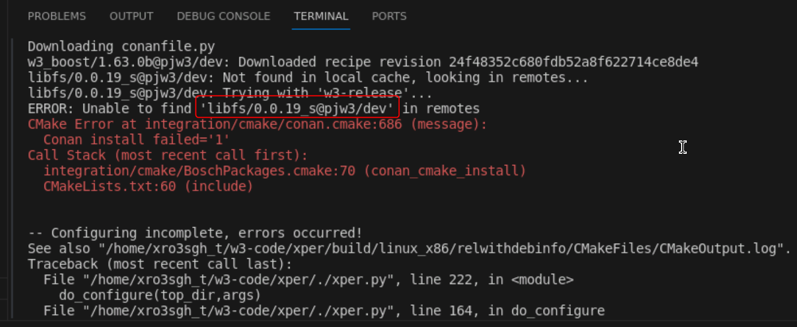

Guideline_ software on the cloud
AOS warehouse compile successful steps and precautions
1. Install Conan: 1.57.0
(Or the ROOT warehouse is available at 1.45.0 that supported by the default)
2. Install the AOS environment
1) The currently used AOS1030, it is recommended to use it AOS Workspace Master branch, not tag: mwaos_1.0.3.0_release
2) Reference link: MW Release Note [Quick Start]
Note: The main difference between the BGN is the execution script command: ./ Install.sh -a -c 'pwd'
3) PMT students also need some permissions:
pjw3_conan_release_local: https://artifactory.prod.boscharena.ai:443/artifactory/api/conan/pjw3_conan_release_local
adc-conan-io:: https://artifactory.prod.boscharena.ai:443/artifactory/api/conan/bosch_pjw3_conan_public_remote
conan-config： https://bitbucket.prod.boscharena.ai/projects/PJW3/repos/conan-config/browse
4) In the prompt, the problem is encountered according to the prompt: PIP Install LXML
(If you can't pip first, PIP is in Conda)
3. Pull the corresponding software
SF warehouse divided into two steps: AOS warehouse compilation & algorithm warehouse compilation
PJW3:
staticfusion： https://bitbucket.prod.boscharena.ai/projects/PJW3/repos/staticfusion/browse
Third -party library: Easy_profiler: https://bitbucket.prod.boscharena.ai/projects/PJW3/repos/easy_profiler/browse
PJW3_ALG:
lanelmodel: https://bitbucket.prod.boscharena.ai/projects/PJW3_ALG/repos/lanemodel/browse
Xper:https://bitbucket.prod.boscharena.ai/projects/PJW3_ALG/repos/xper/browse
4. Compile sf big warehouse:
PC: ./per_build.sh
I will encounter the problem that the CAMKE version does not match
solution：
pip install cmake==3.22.0
vi ~/.bashrc Add Export Path =/Home/XRO3SGH_T/.Local/Bin: $ Pathsource ~/.bashrc Check CMAKE version number: cmake -version compilation passed
QNX: ./per_build.sh -o qnx
Summary of pain points during use:
|
|
Items |
|
|
1 |
The content on the local PC cannot be copied to the work environment on the cloud, nor can CTRIX be copied to Mobaxterm |
|
|
2 |
AOS1030 Environmental suggestion is recommended to upgrade and configure it in the image unified image |
|
|
3 |
Conan1.57.0 Environmental suggestion is recommended to upgrade and configure in the unified mirror |
|
|
4 |
CMAKE's environmental suggestion is recommended to uniformly upgrade to 3.22.0 in the mirror image |
|
|
5 |
The opening of VSCODE, it is recommended to get from code. --no-sandbox to code. |
|
1) According to AOS, it is much faster than BGN
1) Can't copy
Summary in the process of use:
|
|
Items |
|
|
1 |
AOS installation on the cloud is much faster than the local area, saving about 2 hours |
|
|
|
|
|
Successful steps and precautions for compiling algorithm warehouse
When compiling the algorithm warehouse: ./ xper.py --diskclean -configure -regs,,
1) Report the connection error, because the default
This is why AOS -related warehouses can be compiled and passed, mainly because the Master branch of AOS has made ADC adaptation, and the TAG branch is still the configuration of BGN:
|
3f691f74385ci: update install.sh for adc conan remote |
Therefore, the files under XPER also need to be adapted by ADC as follows:
2) I will report an error lack of relevant dependencies

Conclusion: The compilation of the Xper algorithm warehouse lacks the mapping of PJW3/DEV. It is not enough to have PJW3/Release
Overall combing, there are currently at least 9 packs of packaging on PJW3/DEV, as shown below:

Some attempts:
For the package dependent on XPER, you can temporarily upload it to the ADC:
Create a new adc_release on the cloud
conan remote add adc_release https://artifactory.prod.boscharena.ai/artifactory/api/conan/pjw3_conan_release_local/
Upload the dependencies of the required BGN to ADC:
1) Add domain name analysis
2) Bypass Bosch agent
3) Conan https certificate configuration
export no_proxy=$no_proxy,boscharena.ai
cp /home/xro3sgh/w3-pc/xper/.conan/cacert.pem /home/xro3sgh/w3-pc/xper/.conan/cacert.pem.backup
cp /etc/ssl/certs/ca-certificates.crt /home/xro3sgh/w3-pc/xper/.conan/cacert.pem
conan user -r adc_release xro3sgh_t -p
conan download w3_boost/1.63.0b@pjw3/dev -r w3-dev
--9
conan upload w3_boost/1.63.0b@pjw3/dev -r adc_release --all
--9